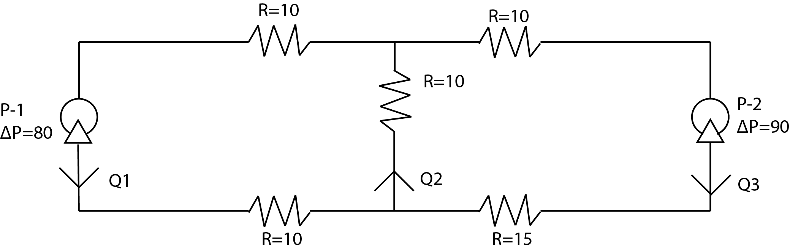

3.3. Gauss–Jordan Elimination#
You are analyzing flow through a fluid network. The system can be modeled analogously to an electrical circuit, with:
\[
-\Delta P = RQ \tag{1}
\]
where ( \Delta P ) is the pressure change, ( R ) is the resistance, and ( Q ) is the volumetric flow rate.
Based on the flow diagram, the balance equations for the nodes and loop are:
(3.12)#\[\begin{align}
Q_1 + Q_3 &= Q_2 \tag{2} \\
Q_1 - Q_2 + Q_3 &= 0 \tag{3} \\
20Q_1 + 10Q_2 &= 80 \tag{4} \\
10Q_2 + 25Q_3 &= 90 \tag{5}
\end{align}\]
Rearranging equations into consistent linear form:
(3.13)#\[\begin{align}
Q_1 - Q_2 + Q_3 &= 0 \tag{2'} \\
Q_1 - Q_2 + Q_3 &= 0 \tag{3} \\
20Q_1 + 10Q_2 + 0Q_3 &= 80 \tag{4} \\
0Q_1 + 10Q_2 + 25Q_3 &= 90 \tag{5}
\end{align}\]
Matrix representation:
(3.14)#\[\begin{equation}
\begin{bmatrix}
1 & -1 & 1 \\
1 & -1 & 1 \\
20 & 10 & 0 \\
0 & 10 & 25
\end{bmatrix}
\begin{bmatrix}
Q_1 \\ Q_2 \\ Q_3
\end{bmatrix}
=
\begin{bmatrix}
0 \\ 0 \\ 80 \\ 90
\end{bmatrix}
\tag{6}
\end{equation}\]
3.3.1. Gauss–Jordan Elimination Steps#
We use the augmented matrix form:
(3.15)#\[\begin{equation}
\begin{bmatrix}
1 & -1 & 1 & 0 \\
-1 & 1 & -1 & 0 \\
20 & 10 & 0 & 80 \\
0 & 10 & 25 & 90
\end{bmatrix}
\tag{7}
\end{equation}\]
3.3.1.1. Step 1: Eliminate row redundancy and simplify#
[ R_2 + R_1 \rightarrow R_2, \quad R_3 - 20R_1 \rightarrow R_3 ]
(3.16)#\[\begin{equation}
\begin{bmatrix}
1 & -1 & 1 & 0 \\
0 & 0 & 0 & 0 \\
0 & 30 & -20 & 80 \\
0 & 10 & 25 & 90
\end{bmatrix}
\tag{8}
\end{equation}\]
3.3.1.2. Step 2: Swap rows to move pivot#
[ R_2 \leftrightarrow R_4 ]
(3.17)#\[\begin{equation}
\begin{bmatrix}
1 & -1 & 1 & 0 \\
0 & 10 & 25 & 90 \\
0 & 30 & -20 & 80 \\
0 & 0 & 0 & 0
\end{bmatrix}
\tag{9}
\end{equation}\]
3.3.1.3. Step 3: Eliminate below pivot in column 2#
[ R_3 - 3R_2 \rightarrow R_3 ]
(3.18)#\[\begin{equation}
\begin{bmatrix}
1 & -1 & 1 & 0 \\
0 & 10 & 25 & 90 \\
0 & 0 & -95 & -190 \\
0 & 0 & 0 & 0
\end{bmatrix}
\tag{10}
\end{equation}\]
3.3.1.4. Step 4: Normalize row 3#
[ R_3 \div -95 \rightarrow R_3 ]
(3.19)#\[\begin{equation}
\begin{bmatrix}
1 & -1 & 1 & 0 \\
0 & 10 & 25 & 90 \\
0 & 0 & 1 & 2 \\
0 & 0 & 0 & 0
\end{bmatrix}
\tag{11}
\end{equation}\]
3.3.1.5. Step 5: Eliminate above values in column 3#
[ R_1 - R_3 \rightarrow R_1, \quad R_2 - 25R_3 \rightarrow R_2 ]
(3.20)#\[\begin{equation}
\begin{bmatrix}
1 & -1 & 0 & -2 \\
0 & 10 & 0 & 40 \\
0 & 0 & 1 & 2 \\
0 & 0 & 0 & 0
\end{bmatrix}
\tag{12}
\end{equation}\]
3.3.1.6. Step 6: Normalize row 2#
[ R_2 \div 10 \rightarrow R_2 ]
(3.21)#\[\begin{equation}
\begin{bmatrix}
1 & -1 & 0 & -2 \\
0 & 1 & 0 & 4 \\
0 & 0 & 1 & 2 \\
0 & 0 & 0 & 0
\end{bmatrix}
\tag{13}
\end{equation}\]
3.3.1.7. Step 7: Eliminate column 2 in row 1#
[ R_1 + R_2 \rightarrow R_1 ]
(3.22)#\[\begin{equation}
\begin{bmatrix}
1 & 0 & 0 & 2 \\
0 & 1 & 0 & 4 \\
0 & 0 & 1 & 2 \\
0 & 0 & 0 & 0
\end{bmatrix}
\tag{14}
\end{equation}\]
3.3.2. Final Result#
[ Q_1 = 2, \quad Q_2 = 4, \quad Q_3 = 2 \tag{15} ]